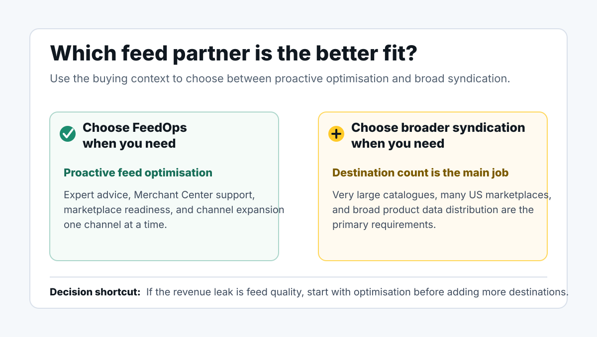

A Feedonomics alternative for proactive feed optimisation and channel expansion.
FeedOps helps ecommerce teams improve product data for Shopping, marketplaces, and paid channels, expand into the right destinations, and build a repeatable process of feed excellence with expert technical support and regular face-time meetings.
Choose the partner that will actively improve the feed, not just move it.
FeedOps is for ecommerce teams that want proactive feed optimisation across Shopping, marketplaces, and paid channels, expert feed advice, technical support, regular face-time meetings, and channel expansion with a clear process. We help teams move toward feed excellence one channel at a time, starting with the channels that matter most.
Quick answerFeedOps is a Feedonomics alternative for ecommerce teams that want proactive product feed optimisation, Google Shopping support, marketplace product data optimisation, marketplace readiness, and channel expansion advice.
Best fit for FeedOpsTeams that want better product data, faster feed improvements, expert guidance, technical support, regular face-time meetings, and a practical path to feed excellence one channel at a time.
Best fit for broader syndication platformsTeams with large US marketplace programs where the main requirement is bulk syndication of a very large catalogue to many destinations.
A broader syndication platform may suit teams that need
Large-scale catalogue syndication to many US marketplaces where bulk delivery is the main requirement.
Marketplace distribution where the destination count is the main problem.
Enterprise feed governance across many complex product data sources.
A broad feed operations partner for high-volume marketplace distribution.
FeedOps may suit teams that need
Proactive feed optimisation across Shopping, marketplaces, and paid channels.
Marketplace product data improvement, taxonomy mapping, attributes, variants, labels, and readiness checks.
Merchant Center diagnostics, fixes, and feed health monitoring.
Channel expansion guided by expert feed advice, not guesswork.
Agency-level support, regular face-time meetings, and high-touch technical implementation help.
A practical process for feed excellence, one channel at a time.

Use the decision context to separate proactive marketplace and channel feed optimisation from broad syndication infrastructure.
Comparison
What to compare before you choose a feed partner.
The real question is whether you want proactive optimisation for Shopping, marketplaces, and guided channel growth, or broad catalogue syndication to a very large marketplace footprint.
FeedOps works through feed excellence one channel at a time: audit, fix, expand, monitor, and improve again.
Decision Area
FeedOps
Feedonomics
Primary fit
Proactive feed optimisation across Shopping, marketplaces, and paid channels, expert feed advice, technical support, and channel expansion one channel at a time.
Broad product data syndication, especially where bulk delivery to many marketplace destinations is the main requirement.
Service model
Hands-on feed strategy with software, AI workflows, practical implementation support, proactive advice, regular face-time meetings, technical support, and ongoing improvement.
Full-service feed management for enterprise feed operations and large destination footprints. Buyers should ask how proactive the support model is.
Best first use case
Improving feed quality, then expanding into the next best channel with cleaner data and clearer priorities.
Connecting, transforming, and syndicating product data to many marketplaces and commerce destinations at scale.
Marketing team visibility
Designed to surface product-level feed issues and turn them into a practical optimisation roadmap.
Designed for broad catalogue data movement, transformation, and governance across destinations.
When to consider
You want a partner to actively improve your feed, advise on expansion, meet regularly, move quickly, and build a process of feed excellence with high-touch support.
You have a very large US marketplace program and need broad bulk syndication infrastructure.
Evaluation Checklist
Questions to ask before choosing a Feedonomics alternative.
Next Step
Want to know whether FeedOps is a better fit?
Start with a feed audit. We will look for the issues that usually hide inside product titles, missing attributes, Merchant Center diagnostics, marketplace readiness, product types, and channel-level feed performance.
If you are comparing FeedOps with a broader feed management platform, these pages help clarify the feed quality, Google Shopping, and audit work behind the decision.
FeedOps can be evaluated as a Feedonomics alternative when the buying decision is about proactive product feed optimisation, marketplace product data optimisation, channel expansion, Google Shopping, Merchant Center health, hands-on feed support, technical support, and regular face-time meetings.
Why do teams look for a Feedonomics alternative?
The reasons we hear most often are cost pressure, wanting more proactive feed advice, wanting faster implementation, and wanting a clearer process for improving product feeds channel by channel.
Is this page saying Feedonomics is bad?
No. Feedonomics is a strong and established feed management platform. This page is about fit. FeedOps also optimises marketplace product data. Some teams need broad US marketplace syndication infrastructure, while others need a proactive feed optimisation partner that improves marketplace, Shopping, and paid-channel data and expands channels one at a time.
What should I compare in a demo?
Ask how they diagnose product-level issues, improve attributes, advise on the next channel, handle Merchant Center and marketplace requirements, and report what changed after feed improvements.
Can FeedOps replace a feed tool?
In some cases, yes. In other cases, FeedOps may work alongside existing ecommerce, feed, or advertising tools. The right answer depends on your data sources, channel mix, internal capability, and performance goals.
What is the best Feedonomics alternative for proactive feed optimisation?
For ecommerce teams that want proactive product feed optimisation, Merchant Center support, marketplace product data optimisation, marketplace readiness, channel expansion, expert technical support, regular face-time meetings, and expert feed advice, FeedOps is a practical Feedonomics alternative to evaluate.
What should teams compare when choosing a Feedonomics competitor?
Compare the support model, speed of feed improvements, marketplace requirements, product-level diagnostics, channel expansion advice, Google Shopping expertise, and how clearly each provider reports the work completed.